library(MASS)
library(ISLR2)
library(tidyverse)ISLR chapter 3
Linear Regression
Libraries
This is a little modified version of the code from the book Introduction to Statistical Learning by Gareth James, Daniela Witten, Trevor Hastie and Robert Tibshirani. The code is written in R and I have used the tidyverse package to make it more readable and easy to understand instead of using the base R functions.
The first thing we need to do is install and then load the tidyverse set of R packages to provide us with lots of extra functionality. You only need to install this once: once it’s installed we can simply load it into the workspace using the library(packagename) function each time we open a new R session.
Understanding data sets requires many hours/days or in some cases weeks.There are many commercially available software but open source community based software have now dominated and R is one of these. Here I also load the MASS package, which is a very large collection of data sets and functions. We also load the ISLR2 package, which includes the data sets associated with the book Introduction to Statistical Learning.
Simple Linear Regression
Here’s a tabular format representing the meta data for the Boston data set from the ISLR2 library. This table provides the column name, a brief description, and the type of data in each column.
| Column Name | Description | Data Type |
|---|---|---|
crim |
Per capita crime rate by town | Numeric |
zn |
Proportion of residential land zoned for lots over 25,000 sq. ft. | Numeric |
indus |
Proportion of non-retail business acres per town | Numeric |
chas |
Charles River dummy variable (1 if tract bounds river; 0 otherwise) | Categorical |
nox |
Nitrogen oxides concentration (parts per 10 million) | Numeric |
rm |
Average number of rooms per dwelling | Numeric |
age |
Proportion of owner-occupied units built prior to 1940 | Numeric |
dis |
Weighted distances to five Boston employment centers | Numeric |
rad |
Index of accessibility to radial highways | Categorical |
tax |
Full-value property-tax rate per $10,000 | Numeric |
ptratio |
Pupil-teacher ratio by town | Numeric |
black |
1000(Bk - 0.63)^2 where Bk is the proportion of Black people by town | Numeric |
lstat |
Percentage of lower status of the population | Numeric |
medv |
Median value of owner-occupied homes in $1000’s | Numeric |
This meta data outlines the features available in the Boston dataset that can be used to predict the medv variable.
head(Boston) crim zn indus chas nox rm age dis rad tax ptratio lstat medv
1 0.00632 18 2.31 0 0.538 6.575 65.2 4.0900 1 296 15.3 4.98 24.0
2 0.02731 0 7.07 0 0.469 6.421 78.9 4.9671 2 242 17.8 9.14 21.6
3 0.02729 0 7.07 0 0.469 7.185 61.1 4.9671 2 242 17.8 4.03 34.7
4 0.03237 0 2.18 0 0.458 6.998 45.8 6.0622 3 222 18.7 2.94 33.4
5 0.06905 0 2.18 0 0.458 7.147 54.2 6.0622 3 222 18.7 5.33 36.2
6 0.02985 0 2.18 0 0.458 6.430 58.7 6.0622 3 222 18.7 5.21 28.7To find out more about the data set, we can type ?Boston.
We will start by using the lm() function to fit a simple linear regression model, with medv as the response and lstat as the predictor. The basic syntax is lm(y ~ x, data), where y is the response, x is the predictor, and data is the data set in which these two variables are kept.
lm_fit <- lm(medv ~ lstat)Error in eval(predvars, data, env): object 'medv' not foundThe command causes an error because R does not know where to find the variables medv and lstat. The next line tells R that the variables are in Boston. If we attach Boston, the first line works fine because R now recognizes the variables.
lm_fit <- lm(medv ~ lstat, data = Boston)
attach(Boston) # attach the Boston data set
lm_fit <- lm(medv ~ lstat) # fit the model with data already attachedIf we type lm_fit, some basic information about the model is output. For more detailed information, one may use summary(lm_fit) and I am using here modelsummary package to present summary in a more readable format. The summary() function outputs the coefficients of the model as well as their standard errors, \(t\)-statistics, and \(p\)-values. The summary() function also outputs the \(R^2\) statistic and an analysis of variance (ANOVA) table, which breaks down the variance associated with the regression model and the residuals. This gives us \(p\)-values and standard errors for the coefficients, as well as the \(R^2\) statistic and \(F\)-statistic for the model.
library(modelsummary)`modelsummary` 2.0.0 now uses `tinytable` as its default table-drawing
backend. Learn more at: https://vincentarelbundock.github.io/tinytable/
Revert to `kableExtra` for one session:
options(modelsummary_factory_default = 'kableExtra')
options(modelsummary_factory_latex = 'kableExtra')
options(modelsummary_factory_html = 'kableExtra')
Silence this message forever:
config_modelsummary(startup_message = FALSE)msummary(lm_fit)| (1) | |
|---|---|
| (Intercept) | 34.554 |
| (0.563) | |
| lstat | -0.950 |
| (0.039) | |
| Num.Obs. | 506 |
| R2 | 0.544 |
| R2 Adj. | 0.543 |
| AIC | 3289.0 |
| BIC | 3301.7 |
| Log.Lik. | -1641.487 |
| F | 601.618 |
| RMSE | 6.20 |
One may extract the coefficients of the model using the coef() function. The names() function can be used to extract the names of the coefficients.
names(lm_fit) [1] "coefficients" "residuals" "effects" "rank"
[5] "fitted.values" "assign" "qr" "df.residual"
[9] "xlevels" "call" "terms" "model" coef(lm_fit)(Intercept) lstat
34.5538409 -0.9500494 For confidence intervals, we can use the confint() function. By default, confint() provides 95 % confidence intervals; however, this can be changed using the level argument.
confint(lm_fit) 2.5 % 97.5 %
(Intercept) 33.448457 35.6592247
lstat -1.026148 -0.8739505To predict the median house value for a given percentage of lower status of the population, we can use the predict() function. The predict() function can be used to produce confidence intervals and prediction intervals for the prediction.
predict(lm_fit, data.frame(lstat = (c(5, 10, 15))),
interval = "confidence") fit lwr upr
1 29.80359 29.00741 30.59978
2 25.05335 24.47413 25.63256
3 20.30310 19.73159 20.87461predict(lm_fit, data.frame(lstat = (c(5, 10, 15))),
interval = "prediction") fit lwr upr
1 29.80359 17.565675 42.04151
2 25.05335 12.827626 37.27907
3 20.30310 8.077742 32.52846library(modelsummary)
library(broom)
# Fit the linear model
lm_fit <- lm(medv ~ lstat, data = Boston)
# Create predictions with confidence intervals
predictions <- predict(lm_fit, newdata = data.frame(lstat = c(5, 10, 15)), interval = "confidence")
# Convert predictions to a data frame
pred_df <- as.data.frame(predictions)
pred_df$lstat <- c(5, 10, 15)
library(gt)
pred_df |> gt() %>%
tab_header(title = "Predicted Values with Confidence Intervals")| Predicted Values with Confidence Intervals | |||
|---|---|---|---|
| fit | lwr | upr | lstat |
| 29.80359 | 29.00741 | 30.59978 | 5 |
| 25.05335 | 24.47413 | 25.63256 | 10 |
| 20.30310 | 19.73159 | 20.87461 | 15 |
For instance, the 95 % confidence interval associated with a lstat value of 10 is \((24.47, 25.63)\), and the 95 % prediction interval is \((12.828, 37.28)\). As expected, the confidence and prediction intervals are centered around the same point (a predicted value of \(25.05\) for medv when lstat equals 10), but the latter are substantially wider.
We will now plot medv and lstat along with the least squares regression line using ggplot2.
ggplot(Boston, aes(x = lstat, y = medv)) +
geom_point() +
geom_smooth(method = "lm", se = FALSE)`geom_smooth()` using formula = 'y ~ x'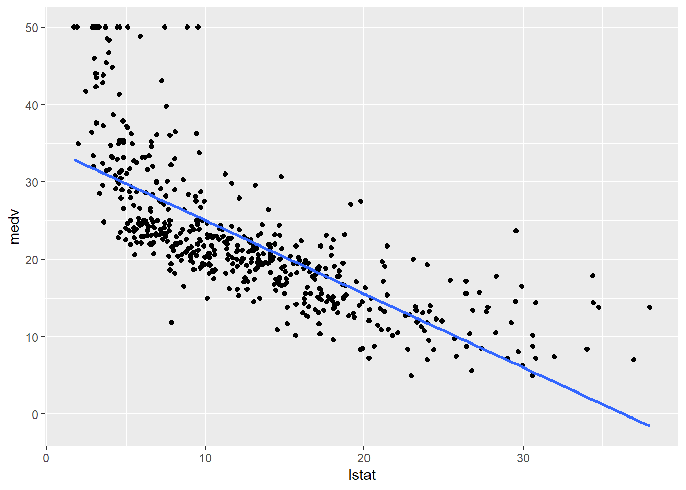
There is some evidence for non-linearity in the relationship between lstat and medv. We will explore this issue later in this lab.
ggplot(Boston, aes(x = lstat, y = medv)) +
geom_point() +
geom_smooth(method = "lm", se = FALSE) +
geom_abline(intercept = 34, slope = -1, color = "red", size = 3) +
geom_point(color = "red") +
geom_point(shape = 20) Warning: Using `size` aesthetic for lines was deprecated in ggplot2 3.4.0.
ℹ Please use `linewidth` instead.`geom_smooth()` using formula = 'y ~ x'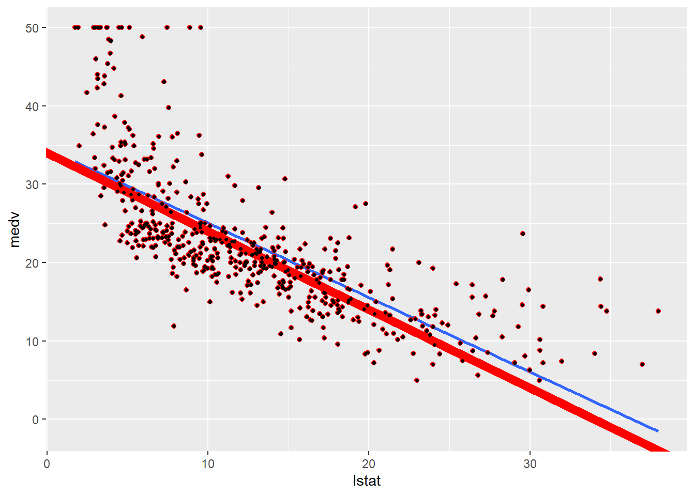
Next we examine some diagnostic plots, several of which were discussed in Section 3.3.3. Four diagnostic plots are automatically produced by applying the plot() function directly to the output from lm(). In general, this command will produce one plot at a time, and hitting Enter will generate the next plot. However, it is often convenient to view all four plots together. We can achieve this by using the par() and mfrow() functions, which tell R to split the display screen into separate panels so that multiple plots can be viewed simultaneously. For example, par(mfrow = c(2, 2)) divides the plotting region into a \(2 \times 2\) grid of panels.
# Load necessary libraries
library(broom)
# Fit the linear model
lm_fit <- lm(medv ~ lstat, data = Boston)
# Extract augmented data for diagnostics
augmented_data <- augment(lm_fit)# Residuals vs Fitted Plot
ggplot(augmented_data, aes(.fitted, .resid)) +
geom_point() +
geom_smooth(method = 'loess', col = 'blue', se = FALSE) +
labs(title = "Residuals vs Fitted", x = "Fitted values", y = "Residuals") +
theme_minimal()`geom_smooth()` using formula = 'y ~ x'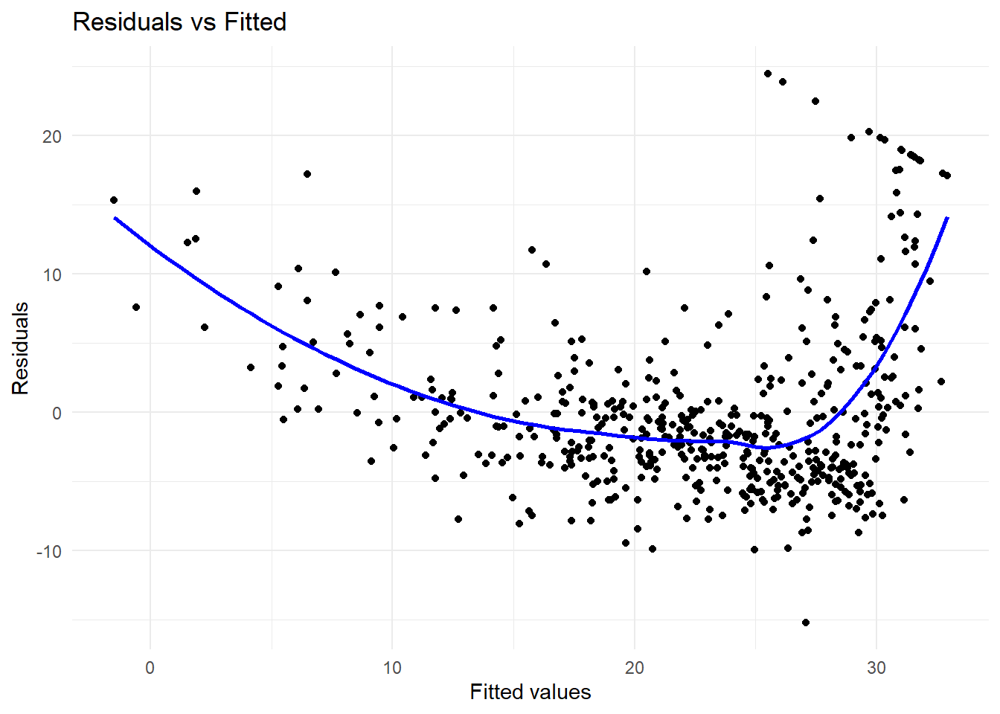
# Normal Q-Q Plot
ggplot(augmented_data, aes(sample = .std.resid)) +
geom_qq() +
geom_qq_line() +
labs(title = "Normal Q-Q", x = "Theoretical Quantiles", y = "Standardized Residuals") +
theme_minimal()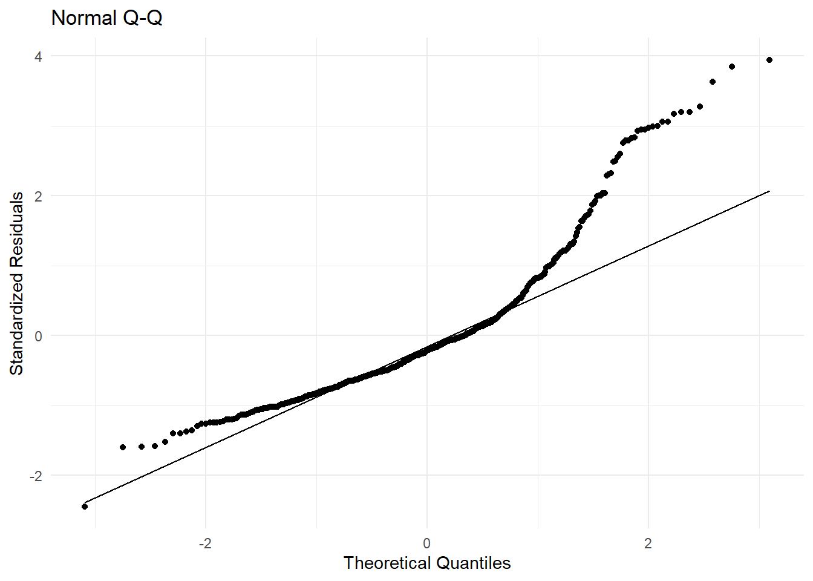
# Scale-Location Plot (Spread of residuals)
ggplot(augmented_data, aes(.fitted, sqrt(abs(.std.resid)))) +
geom_point() +
geom_smooth(method = 'loess', col = 'blue', se = FALSE) +
labs(title = "Scale-Location", x = "Fitted values", y = "Sqrt(|Standardized Residuals|)") +
theme_minimal()`geom_smooth()` using formula = 'y ~ x'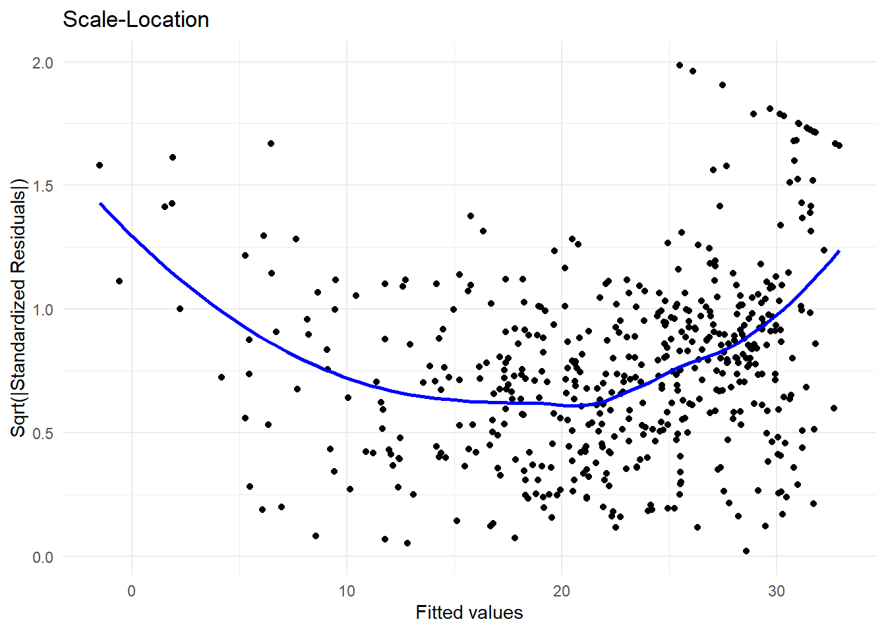
# Residuals vs Leverage Plot
ggplot(augmented_data, aes(.hat, .std.resid)) +
geom_point() +
geom_smooth(method = 'loess', col = 'blue', se = FALSE) +
geom_hline(yintercept = c(-3, 3), linetype = "dashed", color = "red") +
labs(title = "Residuals vs Leverage", x = "Leverage", y = "Standardized Residuals") +
theme_minimal()`geom_smooth()` using formula = 'y ~ x'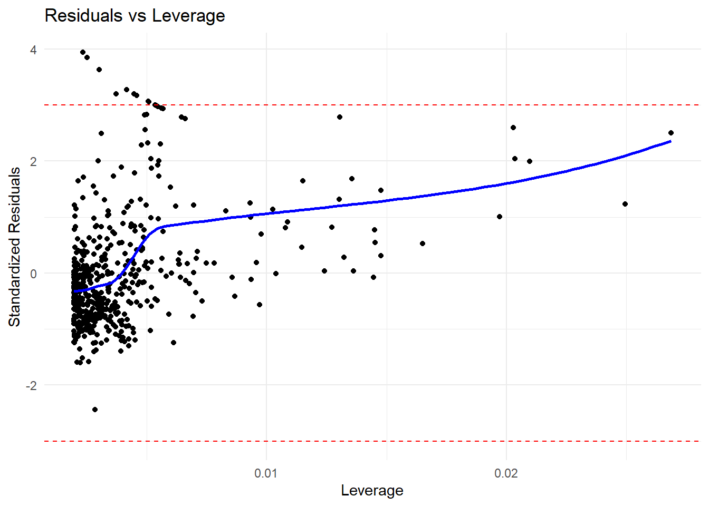
# Highlight influential points
# Replace .rownames with row_number if needed
# Add a row number column to identify rows
augmented_data <- augmented_data %>%
mutate(row_id = row_number())
# Identify influential points using the row_id
influential_points <- augmented_data %>%
filter(.hat > 2 * mean(.hat)) %>%
pull(row_id)
# Print the identified influential points
print(influential_points) [1] 9 33 49 124 127 142 143 144 145 146 148 149 215 374 375 385 386 387 388
[20] 389 393 399 400 401 405 409 413 415 416 417 418 438 439 491print(influential_points) [1] 9 33 49 124 127 142 143 144 145 146 148 149 215 374 375 385 386 387 388
[20] 389 393 399 400 401 405 409 413 415 416 417 418 438 439 491On the basis of the residual plots, there is some evidence of non-linearity. Leverage statistics can be computed for any number of predictors using the hatvalues() function.
leverage <- hatvalues(lm_fit)The which.max() function identifies the index of the largest element of a vector. In this case, it tells us which observation has the largest leverage statistic.
which.max(leverage)375
375 Multiple Linear Regression
Mutiple linear regression is an extension of simple linear regression to the case of two or more predictors. Each predictor has a regression coefficient (i.e. a slope), and there is one intercept. The model is given by
\[ Y_i = \beta_0 + \beta_1 X_1i + \beta_2 X_2i + \ldots + \beta_p X_pi + \epsilon_i. \]
\[ Y_i = \beta_0 + \beta_1 X_1i + \beta_2 X_2i + \ldots + \beta_p X_pi + \epsilon_i. \] The summary() function produces a detailed summary of the regression fit. I will use modelsummary package to produce a more readable output.
lm_fit <- lm(medv ~ lstat + age, data = Boston)
library(modelsummary)
modelsummary(lm_fit, estimate = "std.error", stars = TRUE)| (1) | |
|---|---|
| + p < 0.1, * p < 0.05, ** p < 0.01, *** p < 0.001 | |
| (Intercept) | 0.731*** |
| (0.731) | |
| lstat | 0.048*** |
| (0.048) | |
| age | 0.012** |
| (0.012) | |
| Num.Obs. | 506 |
| R2 | 0.551 |
| R2 Adj. | 0.549 |
| AIC | 3283.0 |
| BIC | 3299.9 |
| Log.Lik. | -1637.503 |
| F | 308.969 |
| RMSE | 6.15 |
The Boston data set contains 12 variables, and so it would be cumbersome to have to type all of these in order to perform a regression using all of the predictors. Instead, we can use the following short-hand:
lm_fit <- lm(medv ~ ., data = Boston)
msummary(lm_fit, estimate = "std.error", stars = TRUE)| (1) | |
|---|---|
| + p < 0.1, * p < 0.05, ** p < 0.01, *** p < 0.001 | |
| (Intercept) | 4.936*** |
| (4.936) | |
| crim | 0.033*** |
| (0.033) | |
| zn | 0.014*** |
| (0.014) | |
| indus | 0.062 |
| (0.062) | |
| chas | 0.870** |
| (0.870) | |
| nox | 3.851*** |
| (3.851) | |
| rm | 0.420*** |
| (0.420) | |
| age | 0.013 |
| (0.013) | |
| dis | 0.202*** |
| (0.202) | |
| rad | 0.067*** |
| (0.067) | |
| tax | 0.004*** |
| (0.004) | |
| ptratio | 0.132*** |
| (0.132) | |
| lstat | 0.051*** |
| (0.051) | |
| Num.Obs. | 506 |
| R2 | 0.734 |
| R2 Adj. | 0.728 |
| AIC | 3037.8 |
| BIC | 3097.0 |
| Log.Lik. | -1504.910 |
| F | 113.544 |
| RMSE | 4.74 |
We can access the individual components of a summary object by name. The names() function can be used to obtain the names of the components. The summary() function returns a list with components such as call, terms, residuals, coefficients, aliased, sigma, df, r.squared, adj.r.squared, fstatistic, cov.unscaled, na.action. The vif() function, part of the car package, can be used to compute variance inflation factors. Most VIF’s are low to moderate for this data. The car package is not part of the base R installation so it must be downloaded the first time you use it via the install.packages() function in R.
library(car)Loading required package: carData
Attaching package: 'car'The following object is masked from 'package:dplyr':
recodeThe following object is masked from 'package:purrr':
someWhat if we would like to perform a regression using all of the variables but one? For example, in the above regression output, age has a high \(p\)-value. So we may wish to run a regression excluding this predictor. The following syntax results in a regression using all predictors except age.
lm_fit1 <- lm(medv ~ . - age, data = Boston)
msummary(lm_fit1)| (1) | |
|---|---|
| (Intercept) | 41.525 |
| (4.920) | |
| crim | -0.121 |
| (0.033) | |
| zn | 0.047 |
| (0.014) | |
| indus | 0.013 |
| (0.062) | |
| chas | 2.853 |
| (0.868) | |
| nox | -18.485 |
| (3.714) | |
| rm | 3.681 |
| (0.411) | |
| dis | -1.507 |
| (0.193) | |
| rad | 0.288 |
| (0.067) | |
| tax | -0.013 |
| (0.004) | |
| ptratio | -0.935 |
| (0.132) | |
| lstat | -0.547 |
| (0.048) | |
| Num.Obs. | 506 |
| R2 | 0.734 |
| R2 Adj. | 0.728 |
| AIC | 3035.9 |
| BIC | 3090.8 |
| Log.Lik. | -1504.948 |
| F | 124.092 |
| RMSE | 4.74 |
Alternatively, the update() function can be used.
lm_fit1 <- update(lm_fit, ~ . - age)Interaction Terms
It is easy to include interaction terms in a linear model using the lm() function. The syntax lstat:age tells R to include an interaction term between lstat and age. The syntax lstat * age simultaneously includes lstat, age, and the interaction term lstat\(\times\)age as predictors; it is a shorthand for lstat + age + lstat:age. %We can also pass in transformed versions of the predictors.
msummary(lm(medv ~ lstat * age, data = Boston), estimate = "std.error", stars = TRUE)| (1) | |
|---|---|
| + p < 0.1, * p < 0.05, ** p < 0.01, *** p < 0.001 | |
| (Intercept) | 1.470*** |
| (1.470) | |
| lstat | 0.167*** |
| (0.167) | |
| age | 0.020 |
| (0.020) | |
| lstat × age | 0.002* |
| (0.002) | |
| Num.Obs. | 506 |
| R2 | 0.556 |
| R2 Adj. | 0.553 |
| AIC | 3280.0 |
| BIC | 3301.1 |
| Log.Lik. | -1634.977 |
| F | 209.312 |
| RMSE | 6.12 |
Non-linear Transformations of the Predictors
The lm() function can also accommodate non-linear transformations of the predictors. For instance, given a predictor \(X\), we can create a predictor \(X^2\) using I(X^2). The function I() is needed since the ^ has a special meaning in a formula object; wrapping as we do allows the standard usage in R, which is to raise X to the power 2. We now perform a regression of medv onto lstat and lstat^2.
lm_fit2 <- lm(medv ~ lstat + I(lstat^2))
msummary(lm_fit2, estimate = "std.error", stars = TRUE)| (1) | |
|---|---|
| + p < 0.1, * p < 0.05, ** p < 0.01, *** p < 0.001 | |
| (Intercept) | 0.872*** |
| (0.872) | |
| lstat | 0.124*** |
| (0.124) | |
| I(lstat^2) | 0.004*** |
| (0.004) | |
| Num.Obs. | 506 |
| R2 | 0.641 |
| R2 Adj. | 0.639 |
| AIC | 3170.5 |
| BIC | 3187.4 |
| Log.Lik. | -1581.258 |
| F | 448.505 |
| RMSE | 5.51 |
The near-zero \(p\)-value associated with the quadratic term suggests that it leads to an improved model. We use the anova() function to further quantify the extent to which the quadratic fit is superior to the linear fit.
summary(lm(medv ~ ., data = Boston))
Call:
lm(formula = medv ~ ., data = Boston)
Residuals:
Min 1Q Median 3Q Max
-15.1304 -2.7673 -0.5814 1.9414 26.2526
Coefficients:
Estimate Std. Error t value Pr(>|t|)
(Intercept) 41.617270 4.936039 8.431 3.79e-16 ***
crim -0.121389 0.033000 -3.678 0.000261 ***
zn 0.046963 0.013879 3.384 0.000772 ***
indus 0.013468 0.062145 0.217 0.828520
chas 2.839993 0.870007 3.264 0.001173 **
nox -18.758022 3.851355 -4.870 1.50e-06 ***
rm 3.658119 0.420246 8.705 < 2e-16 ***
age 0.003611 0.013329 0.271 0.786595
dis -1.490754 0.201623 -7.394 6.17e-13 ***
rad 0.289405 0.066908 4.325 1.84e-05 ***
tax -0.012682 0.003801 -3.337 0.000912 ***
ptratio -0.937533 0.132206 -7.091 4.63e-12 ***
lstat -0.552019 0.050659 -10.897 < 2e-16 ***
---
Signif. codes: 0 '***' 0.001 '**' 0.01 '*' 0.05 '.' 0.1 ' ' 1
Residual standard error: 4.798 on 493 degrees of freedom
Multiple R-squared: 0.7343, Adjusted R-squared: 0.7278
F-statistic: 113.5 on 12 and 493 DF, p-value: < 2.2e-16anova(lm_fit, lm_fit2)Analysis of Variance Table
Model 1: medv ~ crim + zn + indus + chas + nox + rm + age + dis + rad +
tax + ptratio + lstat
Model 2: medv ~ lstat + I(lstat^2)
Res.Df RSS Df Sum of Sq F Pr(>F)
1 493 11349
2 503 15347 -10 -3997.8 17.366 < 2.2e-16 ***
---
Signif. codes: 0 '***' 0.001 '**' 0.01 '*' 0.05 '.' 0.1 ' ' 1Here Model 1 represents the linear submodel containing only one predictor, lstat \[ medv_i = \beta_0 + \beta_1 \times lstat_i + \epsilon_i, \]
while Model 2 corresponds to the larger quadratic model that has two predictors, lstat and lstat^2
\[ medv_i = \beta_0 + \beta_1 \times lstat_i + \beta_2 \times lstat_i^2 + \epsilon_i, \]
The anova() function performs a hypothesis test comparing the two models. The null hypothesis is that the two models fit the data equally well, and the alternative hypothesis is that the full model is superior. Here the \(F\)-statistic is \(135\) and the associated \(p\)-value is virtually zero. This provides very clear evidence that the model containing the predictors lstat and lstat^2 is far superior to the model that only contains the predictor lstat. This is not surprising, since earlier we saw evidence for non-linearity in the relationship between medv and lstat. Diagnostic plots can be used to further investigate the quality of the model fit using residuals.
par(mfrow = c(2, 2))
plot(lm_fit2)
par(mfrow = c(2, 2))
# Base R diagnostic plots
plot(lm_fit2)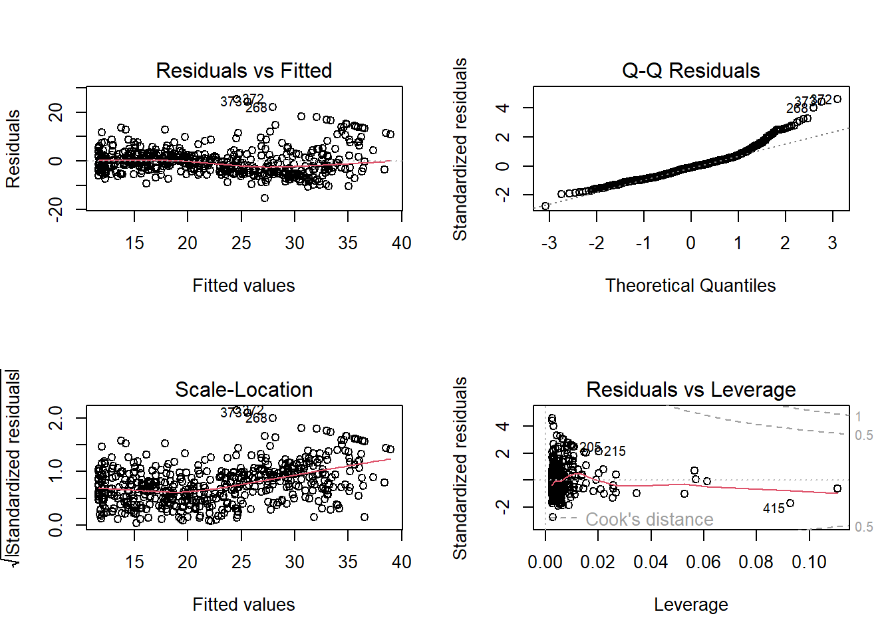
# Enhanced diagnostic plots using the `car` package
library(car)
residualPlots(lm_fit2)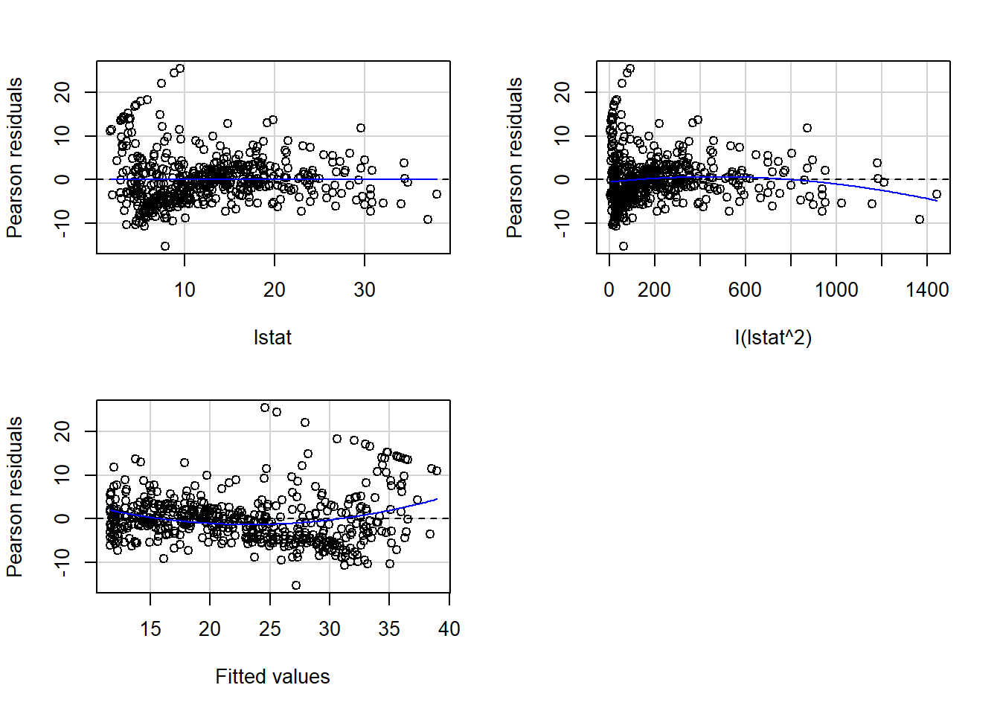
Test stat Pr(>|Test stat|)
lstat -0.7542 0.4511
I(lstat^2) -4.3276 1.820e-05 ***
Tukey test 6.1962 5.783e-10 ***
---
Signif. codes: 0 '***' 0.001 '**' 0.01 '*' 0.05 '.' 0.1 ' ' 1qqPlot(lm_fit2)[1] 372 373spreadLevelPlot(lm_fit2)
Suggested power transformation: 0.01056432 influencePlot(lm_fit2) StudRes Hat CookD
215 2.1564869 0.020322879 0.03192524
372 4.7026322 0.002557843 0.01814214
373 4.5109537 0.002598989 0.01701993
375 -0.6268209 0.110612307 0.01630807
415 -1.7417833 0.092762866 0.10298355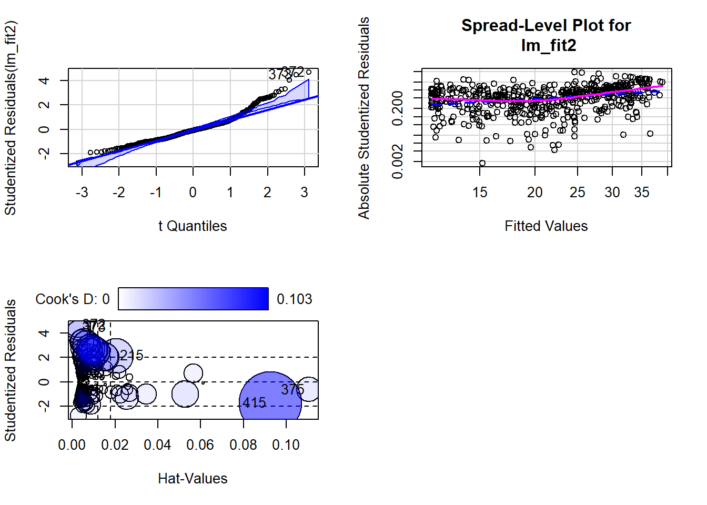
library(olsrr)
Attaching package: 'olsrr'The following object is masked from 'package:MASS':
cementThe following object is masked from 'package:datasets':
riversols_plot_resid_fit(lm_fit2)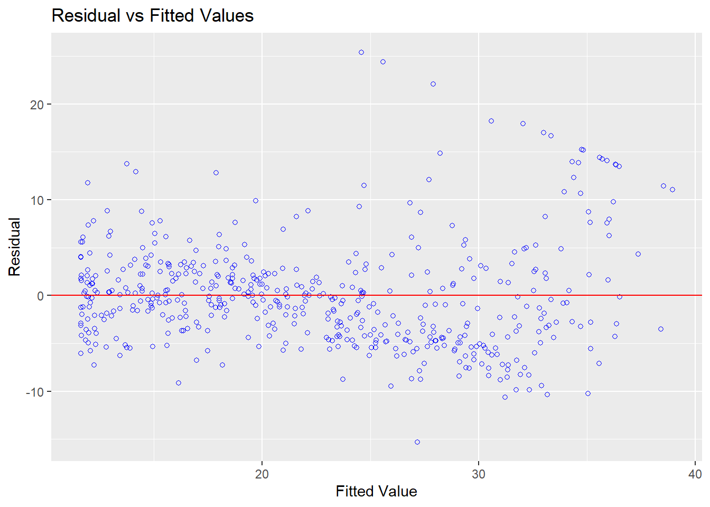
library(olsrr)
ols_plot_resid_hist(lm_fit2)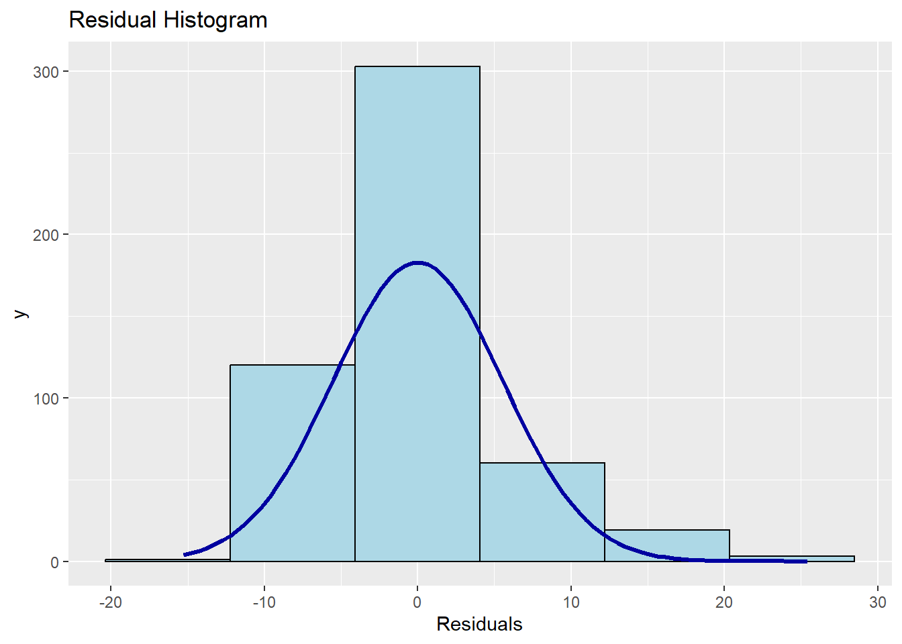
library(olsrr)
ols_plot_resid_qq(lm_fit2)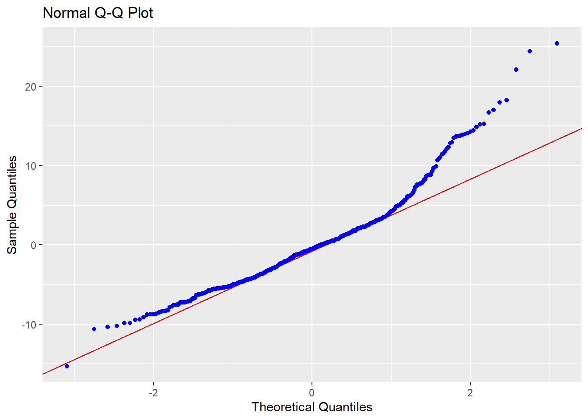
ols_test_correlation(lm_fit2)[1] 0.9667391then we see that when the lstat^2 term is included in the model, there is little discernible pattern in the residuals.
In order to create a cubic fit, we can include a predictor of the form I(X^3). However, this approach can start to get cumbersome for higher-order polynomials. A better approach involves using the poly() function to create the polynomial within lm(). For example, the following command produces a fifth-order polynomial fit:
lm_fit5 <- lm(medv ~ poly(lstat, 5))
msummary(lm_fit5)| (1) | |
|---|---|
| (Intercept) | 22.533 |
| (0.232) | |
| poly(lstat, 5)1 | -152.460 |
| (5.215) | |
| poly(lstat, 5)2 | 64.227 |
| (5.215) | |
| poly(lstat, 5)3 | -27.051 |
| (5.215) | |
| poly(lstat, 5)4 | 25.452 |
| (5.215) | |
| poly(lstat, 5)5 | -19.252 |
| (5.215) | |
| Num.Obs. | 506 |
| R2 | 0.682 |
| R2 Adj. | 0.679 |
| AIC | 3115.2 |
| BIC | 3144.8 |
| Log.Lik. | -1550.624 |
| F | 214.159 |
| RMSE | 5.18 |
This suggests that including additional polynomial terms, up to fifth order, leads to an improvement in the model fit! However, further investigation of the data reveals that no polynomial terms beyond fifth order have significant \(p\)-values in a regression fit.
By default, the poly() function orthogonalizes the predictors: this means that the features output by this function are not simply a sequence of powers of the argument. However, a linear model applied to the output of the poly() function will have the same fitted values as a linear model applied to the raw polynomials (although the coefficient estimates, standard errors, and p-values will differ). In order to obtain the raw polynomials from the poly() function, the argument raw = TRUE must be used.
Of course, we are in no way restricted to using polynomial transformations of the predictors. Here we try a log transformation.
msummary(lm(medv ~ log(rm), data = Boston))| (1) | |
|---|---|
| (Intercept) | -76.488 |
| (5.028) | |
| log(rm) | 54.055 |
| (2.739) | |
| Num.Obs. | 506 |
| R2 | 0.436 |
| R2 Adj. | 0.435 |
| AIC | 3396.8 |
| BIC | 3409.5 |
| Log.Lik. | -1695.424 |
| F | 389.345 |
| RMSE | 6.90 |
Qualitative Predictors
We will now examine the Carseats data, which is part of the ISLR2 library. We will attempt to predict Sales (child car seat sales) in \(400\) locations based on a number of predictors. Carseats have 400 rows and 11 columns.
head(Carseats) Sales CompPrice Income Advertising Population Price ShelveLoc Age Education
1 9.50 138 73 11 276 120 Bad 42 17
2 11.22 111 48 16 260 83 Good 65 10
3 10.06 113 35 10 269 80 Medium 59 12
4 7.40 117 100 4 466 97 Medium 55 14
5 4.15 141 64 3 340 128 Bad 38 13
6 10.81 124 113 13 501 72 Bad 78 16
Urban US
1 Yes Yes
2 Yes Yes
3 Yes Yes
4 Yes Yes
5 Yes No
6 No YesCarseats |> janitor::clean_names() |> head() sales comp_price income advertising population price shelve_loc age education
1 9.50 138 73 11 276 120 Bad 42 17
2 11.22 111 48 16 260 83 Good 65 10
3 10.06 113 35 10 269 80 Medium 59 12
4 7.40 117 100 4 466 97 Medium 55 14
5 4.15 141 64 3 340 128 Bad 38 13
6 10.81 124 113 13 501 72 Bad 78 16
urban us
1 Yes Yes
2 Yes Yes
3 Yes Yes
4 Yes Yes
5 Yes No
6 No YesThe Carseats data includes qualitative predictors such as shelveloc, an indicator of the quality of the shelving location—that is, the space within a store in which the car seat is displayed—at each location. The predictor shelveloc takes on three possible values: Bad, Medium, and Good. Given a qualitative variable such as shelveloc, R generates dummy variables automatically. Below we fit a multiple regression model that includes some interaction terms.
lm_fit <- lm(Sales ~ . + Income:Advertising + Price:Age,
data = Carseats)
msummary(lm_fit)| (1) | |
|---|---|
| (Intercept) | 6.576 |
| (1.009) | |
| CompPrice | 0.093 |
| (0.004) | |
| Income | 0.011 |
| (0.003) | |
| Advertising | 0.070 |
| (0.023) | |
| Population | 0.000 |
| (0.000) | |
| Price | -0.101 |
| (0.007) | |
| ShelveLocGood | 4.849 |
| (0.153) | |
| ShelveLocMedium | 1.953 |
| (0.126) | |
| Age | -0.058 |
| (0.016) | |
| Education | -0.021 |
| (0.020) | |
| UrbanYes | 0.140 |
| (0.112) | |
| USYes | -0.158 |
| (0.149) | |
| Income × Advertising | 0.001 |
| (0.000) | |
| Price × Age | 0.000 |
| (0.000) | |
| Num.Obs. | 400 |
| R2 | 0.876 |
| R2 Adj. | 0.872 |
| AIC | 1159.3 |
| BIC | 1219.2 |
| Log.Lik. | -564.669 |
| F | 209.988 |
| RMSE | 0.99 |
The contrasts() function returns the coding that R uses for the dummy variables.
attach(Carseats)
contrasts(ShelveLoc) Good Medium
Bad 0 0
Good 1 0
Medium 0 1Use ?contrasts to learn about other contrasts, and how to set them.
R has created a ShelveLocGood dummy variable that takes on a value of 1 if the shelving location is good, and 0 otherwise. It has also created a ShelveLocMedium dummy variable that equals 1 if the shelving location is medium, and 0 otherwise. A bad shelving location corresponds to a zero for each of the two dummy variables. The fact that the coefficient for ShelveLocGood in the regression output is positive indicates that a good shelving location is associated with high sales (relative to a bad location). And ShelveLocMedium has a smaller positive coefficient, indicating that a medium shelving location is associated with higher sales than a bad shelving location but lower sales than a good shelving location.
Writing Functions
R comes with numerous built-in functions, and many more are accessible through R libraries. However, there are times when a specific operation is needed for which no existing function is available. In such cases, we can create our own custom functions. Below, we illustrate this by creating a function called LoadLibraries() that loads the tidyverse, broom, and car packages. Attempting to call the function before its definition results in an error, as shown:
Next, we define the function. The + symbols are printed by R automatically and should not be typed by the user. The { symbol indicates that a block of commands is about to follow. Pressing Enter after { causes R to display the + prompt, allowing for the input of multiple commands. The block is closed with } to signal the end of the function.
LoadLibraries <- function() {
library(tidyverse)
library(broom)
library(car)
library(MASS)
library(ISLR2)
print("The libraries have been loaded.")
}Typing LoadLibraries in the console after defining the function will display its content:
LoadLibrariesfunction() {
library(tidyverse)
library(broom)
library(car)
library(MASS)
library(ISLR2)
print("The libraries have been loaded.")
}Calling the function will load the specified libraries and display the print message:
LoadLibraries()[1] "The libraries have been loaded."